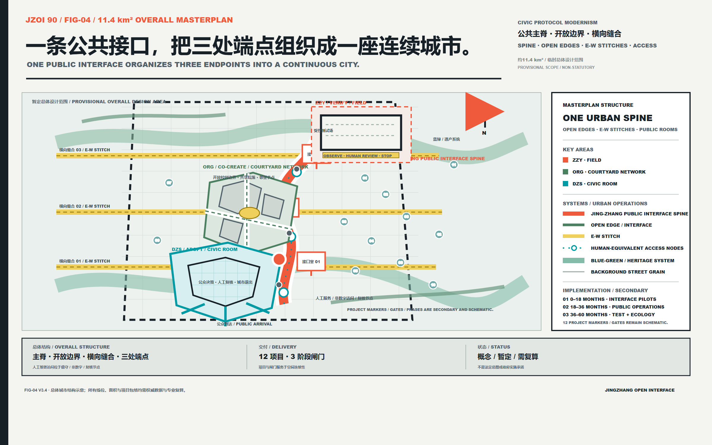
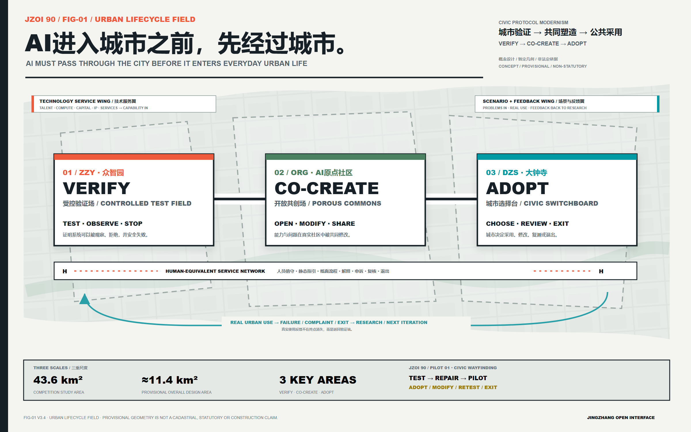
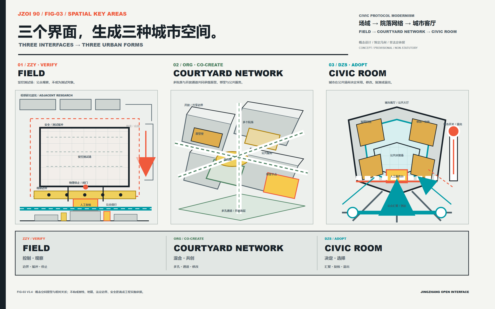
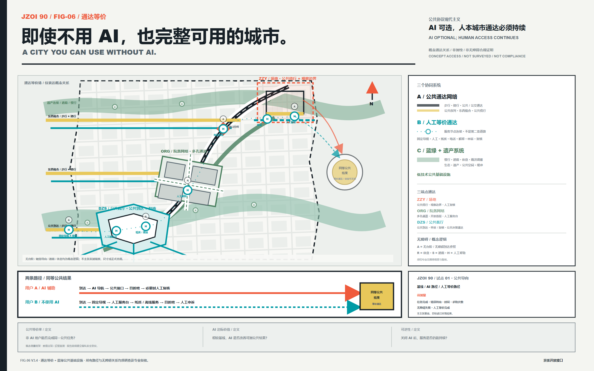
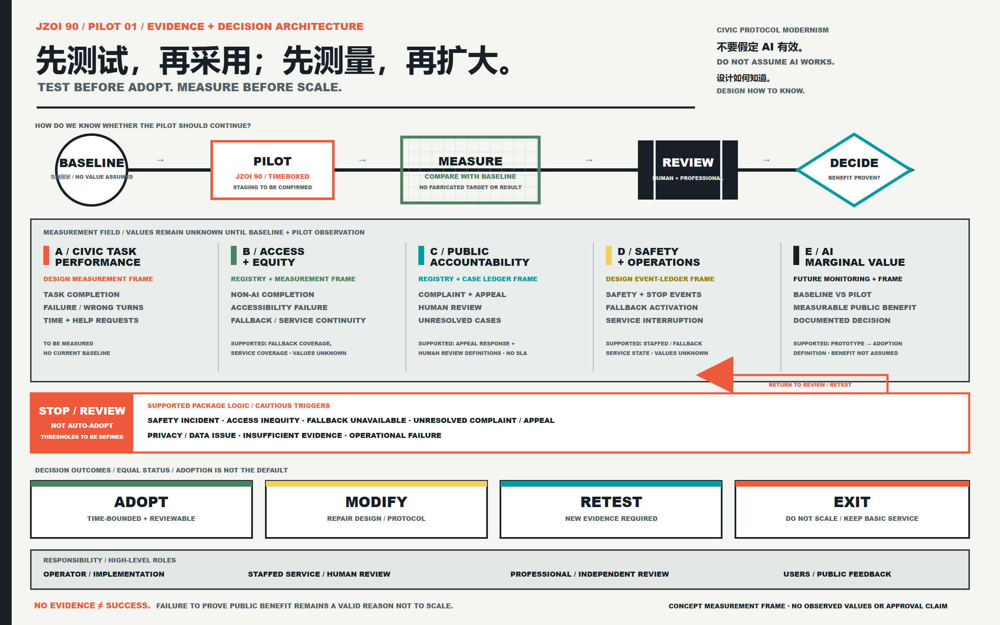

有界、可观察、可停止；人工复核保持在场。
V3.4 / CIVIC SPINE LANDING
一条公共接口，组织三处差异化公共端点，形成一座连续城市。
ONE PUBLIC INTERFACE ORGANIZES THREE DIFFERENTIATED CIVIC ENDPOINTS INTO A CONTINUOUS CITY.
PUBLIC-INTERFACE SPINE · OPEN EDGES · E-W STITCHES
开放院落与共享通道支持共同修改。
公共决定、申诉、复核与退出并置。
≈11.4 km² / PROVISIONAL OVERALL DESIGN AREAURBAN STRUCTURE

ONE URBAN SPINE / THREE DIFFERENTIATED ENDPOINTSRELATIVE CONCEPT GEOMETRY
PUBLIC SAFEGUARD / HUMAN-EQUIVALENT ACCESS
AI-ASSISTEDSAME CIVIC OUTCOMEAI 导航 → 公共接口 → 必要时 HUMAN REVIEW
NO AISAME CIVIC OUTCOME固定导视 → 人工服务 → 纸本 / 电话 → 申诉
AI OPTIONAL; BASIC PUBLIC SERVICE CONTINUES.
PILOT DECISION / EVIDENCE BEFORE SCALE
TESTMEASUREREVIEW
EQUAL STATUS / ADOPTION IS NOT THE DEFAULT
ADOPTMODIFYRETESTEXIT
SUPPORTING REVIEW FIGURES / 支撑审查图件



